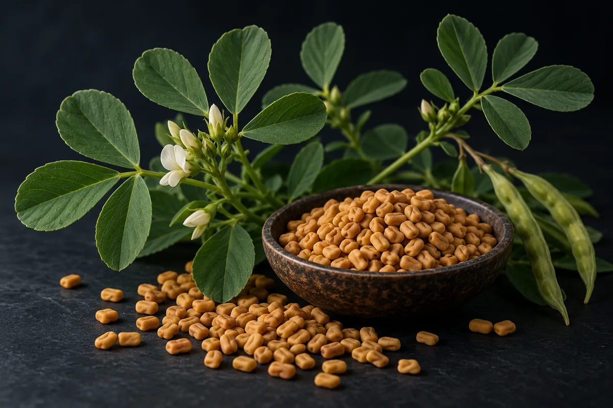

Feno-grego (fenogreco, Trigonella foenum-graecum)
O "+37% acima do placebo" é testosterona na saliva; no sangue, o mesmo ensaio de 95 homens não diferiu do placebo. O "+46%" vem de estudo sem grupo controle.

Material experimental. Leia antes de usar qualquer coisa daqui.
Nada nesta página é recomendação médica, prescrição ou plano de tratamento. É uma tradução organizada de protocolos que circulam em comunidades de pesquisa e, quando existe, do que ensaios publicados testaram. As duas coisas estão marcadas de forma diferente — e não são equivalentes.
A maior parte dos compostos aqui não tem aprovação da ANVISA nem da FDA para uso humano. Vários são vendidos com rótulo de "uso exclusivo em pesquisa", o que significa que não passaram por controle de pureza, esterilidade ou dosagem para consumo por pessoas. Dose descrita por comunidade não é dose validada: é o que alguém relatou ter feito.
Converse com um profissional de saúde habilitado antes de considerar qualquer um destes compostos. Se você já usa algum e sentir algo fora do previsto, procure atendimento — não espere o próximo exame de rotina.
Resumo
O feno-grego é uma semente de tempero com 9 artigos no PubMed marcados como ensaio randomizado ou meta-análise sobre testosterona e 35 sobre glicemia. É, entre as ervas vendidas para testosterona, uma das poucas com efeito positivo em revisão sistemática, mas pequeno: SMD 0,32 na testosterona total e efeito não significativo na livre, segundo a meta-análise de 2023. O "+37% acima do placebo" de 95 homens é testosterona salivar; no sangue, o ensaio não achou diferença contra o placebo. O "+46% em 90%" vem de estudo de um braço só, feito pelo desenvolvedor do extrato. Na glicemia, a base é mais antiga e mais ampla, com qualidade baixa. No Brasil, o extrato de semente é fonte autorizada de saponinas furostanólicas em suplemento, até 450 mg por dia para adultos e sem nenhuma alegação de rótulo.
Por que esta página existe
O feno-grego aparece descrito em vídeos curtos sobre saúde masculina que vi publicados na internet, de dois jeitos. No primeiro, é a "semente ancestral" que eleva a testosterona livre em 46%, bloqueia a aromatase e completa um trio com ashwagandha e Long Jack; a eficácia dependeria de "um jeito específico de extrair" e de uma "segunda variável" não revelada que faria a protodioscina "trabalhar quase o dobro". No segundo, é a semente "de centavos" que derruba a glicose "em minutos", reduz a hemoglobina glicada em quase 1%, melhora a insulina e o colesterol, forma um gel que "bate de frente com antiácidos" e, de quebra, "explode" a testosterona livre.
Levantei as alegações de 3 vídeos curtos, separei as 24 que são verificáveis e procurei cada estudo citado e cada número. Nenhum número desta página veio da fonte secundária do site.
O feno-grego (Trigonella foenum-graecum) é uma leguminosa cuja semente é tempero comum na culinária indiana e do Oriente Médio. Segundo a ficha da base LactMed, dos Institutos Nacionais de Saúde dos EUA, a semente contém mucilagem, 4-hidroxi-isoleucina, sotolon, diosgenina, protodioscina e outras saponinas, e o feno-grego é "geralmente reconhecido como seguro" pela FDA como aromatizante. Os estudos de testosterona não usam a semente moída: usam extratos patenteados, padronizados em saponinas furostanólicas ou em protodioscina, cada um de um fabricante. Quando cito o nome de um extrato abaixo, é porque ele é o objeto do estudo, não indicação de marca.
O mecanismo hormonal é proposta; o glicêmico tem mais apoio
Aromatase. A ideia de que o feno-grego "bloqueia a aromatase" tem origem num ensaio de 2010 cujo próprio título fala em "suposto inibidor de aromatase e de 5-alfa-redutase". Wilborn e colegas deram 500 mg por dia de extrato de feno-grego ou placebo a 30 homens treinados por 8 semanas. A testosterona total e a biodisponível ficaram maiores no grupo do extrato que no do placebo, mas o estradiol só mudou com o tempo, nos dois grupos, sem diferença entre eles. O dado não mostra bloqueio de aromatase.
Testosterona livre. As saponinas furostanólicas são apontadas como o componente ativo, mas não achei estudo humano que isole a protodioscina. A meta-análise de Isenmann e colegas (2023), com 7 estudos e 449 participantes, achou efeito pequeno na testosterona total (SMD 0,32; IC 95% 0,09–0,55) e, na testosterona livre, um efeito que não alcançou significância (SMD 0,24; IC 95% −0,04 a 0,52).
Glicose. Aqui há mecanismo testado. Sauvaire e colegas (1998) isolaram da semente a 4-hidroxi-isoleucina, um aminoácido que aumentou a liberação de insulina em ilhotas pancreáticas isoladas de rato e de humano — e só quando a glicose estava alta; em glicose normal, não teve efeito. É estudo em tecido isolado, não em pessoas. A explicação pela fibra que vira gel no estômago (galactomanana) é a mais repetida, mas não localizei estudo humano que meça esse mecanismo isoladamente.
Quanta evidência existe, de verdade
Os números abaixo foram levantados por mim em 16 de outubro de 2026, no PubMed e no ClinicalTrials.gov. A consulta de cada linha está ao lado do número, para qualquer pessoa repetir e me contradizer.
| Base | Consulta | Resultado |
|---|---|---|
| PubMed | fenugreek OR Trigonella foenum-graecum | 2.224 artigos |
| PubMed | (fenugreek OR Trigonella foenum-graecum) AND (testosterone) | 40 artigos |
| PubMed | (fenugreek OR Trigonella foenum-graecum) AND (testosterone) AND (Randomized Controlled Trial[Publication Type] OR Meta-Analysis[Publication Type]) | 9 artigos |
| PubMed | (fenugreek OR Trigonella foenum-graecum) AND (glucose OR glycemic OR HbA1c OR diabetes) AND (Randomized Controlled Trial[Publication Type] OR Meta-Analysis[Publication Type]) | 35 artigos |
| PubMed | (fenugreek OR Trigonella foenum-graecum) AND (aromatase) | 3 artigos |
| PubMed | protodioscin AND (fenugreek OR Trigonella) | 12 artigos |
| PubMed | (Eurycoma longifolia OR tongkat ali) AND (fenugreek OR Trigonella) AND (ashwagandha OR Withania) | 2 artigos |
| ClinicalTrials.gov | intervenção: fenugreek OR Trigonella | 56 estudos registrados |
| ClinicalTrials.gov | intervenção: (fenugreek OR Trigonella) AND AREA[Phase]PHASE3 | 2 ensaios de fase 3 |
Leitura honesta desses números
- Os 2.224 artigos são quase todos de outra coisa. A busca ampla pega agronomia, química de alimentos, ração animal e estudos em rato. A base clínica de testosterona são 9 artigos com marcação de ensaio ou meta-análise.
- As 2 fases 3 não tratam de hormônio. Uma é de fibra de feno-grego e microbiota intestinal, retirada sem participantes; a outra, de fase 2 e 3, é de gordura no fígado. Registro não é resultado.
- Quase todo ensaio de testosterona usa um extrato de fabricante, e vários são do próprio fabricante. Os estudos do extrato de 20% de protodioscina são de um braço só, assinados pelo grupo que o desenvolveu; o registro do ensaio de 100 homens tem uma empresa como patrocinadora. O ensaio norueguês de 95 homens foi financiado pelo laboratório contratado, do qual dois autores são acionistas.
- Combinação com ashwagandha e Long Jack: nenhum estudo. Os 2 artigos da busca são revisões que tratam das ervas separadamente.
- Contagem de artigo mede atenção acadêmica, não evidência de desfecho.
Os estudos que sustentam as alegações
Segundo o PubMed, estes são os trabalhos clínicos concretos por trás do que se diz sobre o feno-grego. Leia o que cada um mediu, e em quantas pessoas.
| Estudo | N | Contexto | O que relatou | Ressalva |
|---|---|---|---|---|
| Lee-Ødegård et al., 2024 PLoS One 19(9):e0310170 · PMID 39288153 | 95 | Homens de 40 a 80 anos, Noruega; 0, 600, 1.200 ou 1.800 mg/dia de extrato com nutrientes, 12 semanas, duplo-cego | Testosterona total no plasma +13,0% e índice de testosterona livre +16,3% contra o início, mas não contra o placebo (+9,0%, p = 0,122; +11,3%, p = 0,059). Testosterona na saliva +37,2% contra o placebo (p = 0,042). Sem efeito subjetivo | Os comprimidos tinham também nutrientes essenciais, entre eles vitamina D; financiado pelo laboratório contratado, com autores acionistas |
| Rao et al., 2016 Aging Male 19(2):134-42 · PMID 26791805 | 120 | Homens saudáveis de 43 a 70 anos; 600 mg/dia de extrato padronizado ou placebo, 12 semanas | Escore de sintomas de deficiência androgênica caiu; ereções matinais e frequência sexual melhoraram; testosterona total e livre subiram contra o placebo | Percentuais não estão no resumo; NÃO VERIFIQUEI o financiamento |
| Steels et al., 2011 Phytother Res 25(9):1294-300 · PMID 21312304 | 60 | Homens de 25 a 52 anos sem disfunção erétil; 600 mg/dia de extrato com minerais ou placebo, 6 semanas | Excitação e orgasmo melhoraram no questionário; testosterona e prolactina "permaneceram dentro da faixa de referência" | O extrato vinha com minerais |
| Wilborn et al., 2010 Int J Sport Nutr Exerc Metab 20(6):457-65 · PMID 21116018 | 30 | Homens treinados; 500 mg/dia de extrato ou placebo, 8 semanas, com treino de força | Testosterona total e biodisponível e gordura corporal melhores que no placebo; estradiol sem diferença entre grupos | O título chama o produto de "suposto" inibidor de aromatase |
| Maheshwari et al., 2017 Int J Med Sci 14(1):58-66 · PMID 28138310 | 50 | Homens de 35 a 65 anos; 500 mg/dia de extrato com 20% de protodioscina, 12 semanas | Testosterona livre "até 46%" maior em 90% dos voluntários; contagem de espermatozoides melhor em 85,4% | Um braço só, aberto, sem placebo; o diretor científico e o presidente da empresa do extrato estão entre os autores |
| Bagchi et al., 2017 Funct Foods Health Dis 7(4):235 · doi:10.31989/ffhd.v7i4.326 · fora do PubMed | 50 | Mesmo extrato, mesma dose, mesmas 12 semanas e mesma faixa de idade | Aumento "estatisticamente significativo" da testosterona livre | Um braço só, aberto; mesmos autores e mesmo desenho do artigo acima; é o "Baggett 2017" dos vídeos |
| Sankhwar et al., 2023 J Am Nutr Assoc 42(1):27-35 · PMID 34694954 | 100 | Homens de 35 a 60 anos; 500 mg/dia do mesmo extrato, 12 semanas | Testosterona livre e ligada subiram; motilidade de espermatozoides melhorou | Um braço só, aberto; registro com empresa como patrocinadora |
| Isenmann et al., 2023 (meta-análise) Int J Sports Med 44(10):692-703 · PMID 37253363 | 7 estudos, 449 participantes | Força, composição corporal e hormônios | Testosterona total SMD 0,32 (0,09–0,55); testosterona livre SMD 0,24 (−0,04 a 0,52); massa magra e leg press sem significância | Efeito "pequeno", nas palavras dos autores |
| Mansoori et al., 2020 (meta-análise) Phytother Res 34(7):1550-1555 · PMID 32048383 | 4 ensaios | Testosterona total em homens | Efeito significativo do extrato na testosterona total | Só 4 ensaios; o tamanho do efeito não está no resumo |
Duas revisões independentes dão a escala. A de Smith e colegas (2021), com 32 ensaios de 13 ervas, concluiu que extratos de semente de feno-grego e de raiz de ashwagandha são os que têm efeito positivo mais claro na testosterona; a página Forskolina cita a mesma revisão. A de Morgado e colegas (2024) não incluiu o feno-grego entre os produtos "possivelmente eficazes" listados no resumo.
Na glicose, a base é outra, e mais antiga
| Estudo | N | Contexto | O que relatou | Ressalva |
|---|---|---|---|---|
| Neelakantan et al., 2014 (meta-análise) Nutr J 13:7 · PMID 24438170 | 10 ensaios | Semente de feno-grego, pelo menos 1 semana | Glicose de jejum −0,96 mmol/L; glicose 2 h após sobrecarga −2,19 mmol/L; HbA1c −0,85% (3 ensaios) | Efeito só em diabéticos com dose média ou alta; "a maioria dos ensaios" de baixa qualidade |
| Shabil et al., 2023 (meta-análise) Medicina (Kaunas) 59(2):248 · PMID 36837450 | 14 ensaios, 894 participantes | Glicemia | HbA1c −0,88% (IC −1,49 a −0,27); glicose de jejum e pós-refeição sem diferença significativa | Os autores apontam qualidade e heterogeneidade como problema |
| Fakhr et al., 2023 (meta-análise) Pharmacol Res 187:106594 · PMID 36470549 | 29 ensaios | Componentes da síndrome metabólica | Glicose de jejum −16,75 mg/dL (IC −23,36 a −10,15); triglicerídeos −20,12 mg/dL; HDL +3,55 mg/dL | Mistura populações e preparações |
| Kim et al., 2023 (meta-análise) Int J Mol Sci 24(18):13999 · PMID 37762302 | 10 ensaios, 706 participantes | Diabetes tipo 2 e pré-diabetes | Glicose de jejum, glicose de 2 h e HbA1c caíram; resistência à insulina (HOMA-IR) e LDL sem diferença | Efeitos colaterais gastrointestinais leves em alguns estudos |
| Heshmat-Ghahdarijani et al., 2020 (meta-análise) Phytother Res 34(9):2230-2245 · PMID 32385866 | 15 ensaios | Lipídios | Colesterol total, LDL e triglicerídeos caíram; HDL subiu | Só artigos em inglês |
| DiSilvestro et al., 2011 Phytother Res 25(1):88-91 · PMID 20623611 | não informado no resumo | Azia frequente; produto de fibra de feno-grego 30 min antes de duas refeições, 2 semanas | Menos azia que no placebo, efeito parecido com o de ranitidina 75 mg duas vezes ao dia | Estudo piloto |
Repare que duas meta-análises do mesmo ano discordam sobre a glicose de jejum: Fakhr achou −16,75 mg/dL; Shabil não achou diferença significativa. As duas concordam numa coisa: a qualidade dos ensaios é ruim.
Doses usadas em estudos humanos publicados
Isto não é recomendação de dose: é o registro do que foi administrado em estudos publicados, com a finalidade de cada um. Fora do contexto do estudo, esses números não se transferem.
| Estudo | Dose | Duração | Finalidade do estudo |
|---|---|---|---|
| Rao et al., 2016 | 600 mg/dia de extrato padronizado | 12 semanas | Sintomas de deficiência androgênica, função sexual e testosterona |
| Steels et al., 2011 | 600 mg/dia de extrato, com minerais | 6 semanas | Libido |
| Wilborn et al., 2010 | 500 mg/dia de extrato | 8 semanas | Hormônios e força em homens treinados |
| Maheshwari et al., 2017; Bagchi et al., 2017; Sankhwar et al., 2023 | 500 mg/dia de extrato com 20% de protodioscina | 12 semanas | Testosterona e sêmen, sem placebo |
| Lee-Ødegård et al., 2024 | 600, 1.200 ou 1.800 mg/dia de extrato, com nutrientes | 12 semanas | Testosterona no plasma e na saliva |
| Gupta et al., 2024 | 1.000 mg/dia de extrato com mais de 45% de saponinas furostanólicas, junto com metformina | 12 semanas | Glicemia no diabetes tipo 2 |
| DiSilvestro et al., 2011 | Produto de fibra, antes de duas refeições (quantidade não informada no resumo) | 2 semanas | Azia |
Dois cuidados de leitura. Primeiro: "600 mg de extrato" não é "600 mg de saponina"; o limite brasileiro de 450 mg por dia é de saponinas furostanólicas, e cada extrato tem uma concentração. Segundo: não achei estudo do preparo que circula nos vídeos, de 5 a 10 g de semente fervidos por 10 minutos e bebidos 15 minutos antes da refeição. Segundo a ficha da LactMed, efeito sobre colesterol e açúcar no sangue aparece com doses de cerca de 25 g ou mais por dia.
Das 24 alegações, 2 se confirmam como foram ditas
Cada linha é uma alegação como ela circula, sem o nome de quem a fez. O veredito usa seis rótulos: confirmado, parcialmente, não sustentado, sem estudo em humanos, estudo em animal ou in vitro e número não encontrado na fonte citada.
| O que se diz | O que os estudos mostram | Veredito |
|---|---|---|
| Duplo-cego com 95 homens, 12 semanas: "+37% acima do placebo" | O estudo existe (Lee-Ødegård 2024). O +37,2% contra o placebo é testosterona na saliva; no sangue, total e índice de testosterona livre não diferiram do placebo. Financiado pelo laboratório contratado | Parcialmente |
| Bloqueia a aromatase, que converte testosterona em estrogênio | O ensaio que testou a ideia chama o produto de "suposto" inibidor, e o estradiol não diferiu entre extrato e placebo (Wilborn 2010) | Não sustentado |
| Ashwagandha, Long Jack e feno-grego atacam "três travas" (cortisol, SHBG e aromatase) | Nenhum estudo da combinação; os 2 artigos da busca são revisões das ervas em separado | Sem estudo em humanos |
| "Baggett et al. 2017, Functional Foods in Health and Disease, 50 homens, 12 semanas: +46% em 90% dos participantes" | O estudo existe (Bagchi et al. 2017, revista fora do PubMed) e repete a população de Maheshwari 2017, onde está o "até 46% em 90%". É um braço só, sem placebo, feito pelos desenvolvedores do extrato | Parcialmente |
| "Raul et al. 2016, The Aging Male, 120 homens, duplo-cego contra placebo, mesma direção" | Rao et al. 2016: 120 homens, 600 mg/dia por 12 semanas; testosterona total e livre subiram contra o placebo | Confirmado |
| Age na fração livre, "a que seu corpo usa" | Livre subiu contra placebo em Rao 2016; não significativa na meta-análise de 2023 (Isenmann) nem contra placebo no ensaio de 2024 | Parcialmente |
| Só funciona com "um jeito específico de extrair"; fora da faixa é "decoração de cápsula" | Não localizei estudo comparando extratos ou métodos de extração; os ensaios usam extratos diferentes e a meta-análise os junta | Não sustentado |
| Os dois estudos acertaram a faixa "quase por acaso" | Cada estudo usou um extrato patenteado, padronizado de propósito pelo fabricante | Não sustentado |
| "Fenogreco não tem dono", e por isso ninguém investe | Há vários extratos patenteados, e os ensaios registrados têm empresas como patrocinadoras | Não sustentado |
| Uma "segunda variável" faz a protodioscina "trabalhar quase o dobro" | Não revelada; nenhum estudo localizado | Sem estudo em humanos |
| A protodioscina é "o composto ativo que faz o trabalho" | Os estudos com extrato rico em protodioscina são de um braço só; não achei estudo humano com protodioscina isolada | Sem estudo em humanos |
| Saponinas furostanólicas aumentam testosterona livre e libido "de forma documentada" | Libido melhorou em Steels 2011 e função sexual em Rao 2016; testosterona livre não significativa na meta-análise de 2023 | Parcialmente |
| Meta-análises em humanos: hemoglobina glicada "quase 1%" menor | −0,85% em 3 ensaios (Neelakantan 2014) e −0,88% em 14 ensaios (Shabil 2023), com qualidade baixa; efeito em quem tem diabetes | Confirmado |
| Meta-análise de 2023: glicose de jejum −16,7 mg/dL | Fakhr 2023: −16,75 mg/dL em 29 ensaios. Outra meta-análise do mesmo ano (Shabil 2023) não achou diferença significativa na glicose de jejum | Parcialmente |
| Glicose pós-refeição −22,2 mg/dL | Não localizei o número nos resumos lidos; Shabil 2023 achou −10,61 mg/dL sem significância | Número não encontrado na fonte citada |
| Melhora significativa dos níveis de insulina | Na meta-análise de ensaios randomizados de 2023 (Kim), a resistência à insulina não mudou significativamente | Não sustentado |
| "Derruba sua glicose em minutos" | A revisão de 2014 registra efeito agudo na glicose pós-refeição; não li os estudos originais nem achei medida "em minutos" | Parcialmente |
| O galactomanano vira gel no estômago e atrasa os carboidratos | Explicação comum; não localizei estudo humano que meça o mecanismo isolado | Sem estudo em humanos |
| A 4-hidroxi-isoleucina estimula a insulina "só quando você come" | Em ilhotas isoladas de rato e humano, o efeito apareceu só com glicose alta (Sauvaire 1998) | Estudo em animal ou in vitro |
| Reduz o colesterol "ruim" | LDL menor numa meta-análise de 2020 (Heshmat-Ghahdarijani); sem diferença na de 2023 (Kim) | Parcialmente |
| Gel protetor que "bate de frente" com antiácidos de farmácia | Piloto de 2 semanas com produto de fibra: efeito parecido com ranitidina 75 mg duas vezes ao dia (DiSilvestro 2011) | Parcialmente |
| Decocção de 5 a 10 g fervidos por 10 minutos, 15 minutos antes de comer | Não localizei estudo desse preparo | Sem estudo em humanos |
| Para testosterona, consumir "em pó" | Os ensaios de testosterona usaram extratos padronizados em cápsula, não semente em pó | Não sustentado |
| "Semente de centavos" resolve o que remédio de glicose e reposição hormonal resolvem | Nenhum ensaio comparou feno-grego com reposição; nos ensaios de diabetes, o extrato foi somado à metformina (Gupta 2024) | Não sustentado |
Placar: 2 confirmadas, 8 parcialmente, 7 não sustentadas, 1 com dado só em tecido isolado, 1 com número não encontrado na fonte citada e 5 sem estudo em humanos.
O feno-grego é o caso raro em que há algo, mas menos do que se promete
- O efeito na testosterona existe em revisão, e é pequeno. SMD de 0,32 é efeito pequeno pela convenção estatística, e a própria meta-análise o chama assim. Não é "explodir" nada.
- "Testosterona livre" é, de novo, o desfecho mais fraco. Foi o que não alcançou significância na meta-análise de 2023 e o que não diferiu do placebo no sangue no ensaio de 2024. A saliva subiu, e os autores defendem que a saliva reflete a fração livre; é uma medida menos usada na clínica.
- Os números de dois dígitos vêm dos estudos mais fracos. O "+46% em 90%" é de estudo sem placebo, publicado duas vezes pelo mesmo grupo, com o mesmo número de voluntários.
- Na glicose, a base é maior e mais antiga, mas de qualidade baixa. Há efeito médio favorável em pessoas com diabetes, com resultados discordantes entre meta-análises do mesmo ano.
Segurança, efeitos adversos e interações
- O mais comum é desconforto gastrointestinal leve. Numa revisão de escopo de 60 artigos (Amiri Ardekani 2026), 14 ensaios relataram efeito adverso, 23 relataram nenhum e 13 não informaram. Além do incômodo intestinal, foram descritos hipoglicemia, possível queda de potássio, alergia, cheiro de xarope de bordo na urina, no suor ou na pele de bebês e mães, e interações com remédios. Não houve morte atribuída.
- Hipoglicemia somada a remédio. Os ensaios de diabetes deram o extrato junto com metformina e sulfonilureia. Somar o feno-grego por conta própria a esses remédios pode baixar a glicose além do previsto; a ficha da LactMed pede cautela com doses altas em mulheres com diabetes.
- Varfarina. Segundo a LactMed, o feno-grego pode interagir com a varfarina e causar sangramento.
- Alergia cruzada. Há reação cruzada com amendoim (Takei 2024) e, segundo a LactMed, com grão-de-bico e outras leguminosas.
- Fígado e pele. A LactMed registra relatos de toxicidade hepática, com o feno-grego sozinho ou em misturas, e um caso de necrólise epidérmica tóxica numa mãe que o usava para aumentar o leite.
- Potássio. A LactMed registra relato de queda de 14% no potássio sérico.
- Quem não deve usar: pela regra brasileira, gestantes, lactantes e crianças — o rótulo do suplemento com saponinas furostanólicas tem de dizer isso, e o uso é "não autorizado" abaixo de 19 anos. Quem é alérgico a amendoim ou leguminosas, quem usa varfarina e quem usa remédio para diabetes precisa de orientação; isso é inferência minha a partir das fontes acima, não recomendação formal localizada.
Status regulatório
- Brasil, suplemento alimentar: desde a IN 304, de 26 de junho de 2024, as saponinas de glicosídeos de furostanol constam do Anexo I da IN 28/2018, e a fonte autorizada é o extrato de semente de feno-grego (Trigonella foenum-graecum L.). O máximo por recomendação diária é 450 mg para maiores de 19 anos; o mínimo é "não estabelecido". Para todas as faixas até 18 anos, gestantes e lactantes, o uso é "não autorizado" (art. 8º da IN 28). O rótulo tem de trazer: "Este produto não deve ser consumido por gestantes, lactantes e crianças." Versão consolidada conferida: com alterações até a IN 470, de 16 de setembro de 2026.
- Brasil, alegação de rótulo: as saponinas furostanólicas não têm alegação autorizada no Anexo V da IN 28/2018, e pela RDC 243/2018 (art. 16) só as alegações dessa lista podem ir ao rótulo. "Aumenta a testosterona" ou "controla a glicose" não são alegações permitidas.
- Brasil, medicamento: nenhum registro com feno-grego no dado aberto da ANVISA (tabela abaixo).
- Estados Unidos: segundo a LactMed, o feno-grego é "geralmente reconhecido como seguro" (GRAS) pela FDA como aromatizante. NÃO VERIFIQUEI a situação dos extratos concentrados como suplemento.
- União Europeia: NÃO VERIFIQUEI a monografia da Agência Europeia de Medicamentos para a semente.
- WADA: o feno-grego não aparece na Lista Proibida de 2026.
No Brasil, busquei no dado aberto de medicamentos registrados da ANVISA, no princípio ativo e no nome do produto, sem acento e sem diferença de caixa.
| Princípio ativo | Padrão buscado | Registros ativos | Classe terapêutica declarada | Produtos |
|---|---|---|---|---|
| Trigonella foenum-graecum, feno-grego | trigonella|feno.?grego|fenogreco|fenugre | 0 | — | Nenhum registro, ativo ou inativo |
O que este levantamento não fez
- Li resumos, não os artigos inteiros. Em especial, não li o texto completo de Rao (2016) e NÃO VERIFIQUEI quem o financiou.
- Não achei a origem do "−22,2 mg/dL" na glicose pós-refeição.
- Não li a monografia europeia da semente nem a situação dos extratos nos EUA.
- Não verifiquei a concentração de saponinas de cada extrato estudado, o que impede converter as doses dos estudos para o limite brasileiro de 450 mg.
- Não avaliei interações além das registradas pela LactMed e pela revisão de escopo.
- Não avaliei a ashwagandha e o tongkat ali, que têm páginas próprias: Ashwagandha e Tongkat ali.
Referências
- Lee-Ødegård S, Gundersen TE, Drevon CA. Effect of a plant extract of fenugreek (Trigonella foenum-graecum) on testosterone in blood plasma and saliva in a double blind randomized controlled intervention study. PLoS One. 2024;19(9):e0310170. PMID 39288153 — os 95 homens: +37,2% na saliva contra placebo, sem diferença no sangue.
- Rao A, Steels E, Inder WJ, et al. Testofen, a specialised Trigonella foenum-graecum seed extract reduces age-related symptoms of androgen decrease, increases testosterone levels and improves sexual function in healthy aging males in a double-blind randomised clinical study. Aging Male. 2016;19(2):134-42. PMID 26791805 — o "Raul et al. 2016": 120 homens, testosterona total e livre contra placebo.
- Steels E, Rao A, Vitetta L. Physiological aspects of male libido enhanced by standardized Trigonella foenum-graecum extract and mineral formulation. Phytother Res. 2011;25(9):1294-300. PMID 21312304 — libido melhor, testosterona dentro da faixa.
- Wilborn C, Taylor L, Poole C, et al. Effects of a purported aromatase and 5α-reductase inhibitor on hormone profiles in college-age men. Int J Sport Nutr Exerc Metab. 2010;20(6):457-65. PMID 21116018 — o "suposto" inibidor de aromatase; estradiol sem diferença.
- Maheshwari A, Verma N, Swaroop A, et al. Efficacy of Furosap(TM), a novel Trigonella foenum-graecum seed extract, in Enhancing Testosterone Level and Improving Sperm Profile in Male Volunteers. Int J Med Sci. 2017;14(1):58-66. PMID 28138310 — o "até 46% em 90%", sem placebo.
- Bagchi D, Swaroop A, Maheshwari A, et al. A novel protodioscin-enriched fenugreek seed extract (Trigonella foenum-graecum, family Fabaceae) improves free testosterone level and sperm profile in healthy volunteers. Funct Foods Health Dis. 2017;7(4):235. doi:10.31989/ffhd.v7i4.326 — o "Baggett 2017" dos vídeos; não indexado no PubMed, conferido no Crossref.
- Sankhwar SN, Kumar P, Bagchi M, et al. Safety and Efficacy of Furosap®, a Patented Trigonella foenum-graecum Seed Extract, in Boosting Testosterone Level, Reproductive Health and Mood Alleviation in Male Volunteers. J Am Nutr Assoc. 2023;42(1):27-35. PMID 34694954 — 100 homens, um braço só.
- Isenmann E, Alisauskas P, Flenker U, et al. The Anabolic Effect of Fenugreek: A Systematic Review with Meta-analysis. Int J Sports Med. 2023;44(10):692-703. PMID 37253363 — efeito pequeno na testosterona total, não significativo na livre.
- Mansoori A, Hosseini S, Zilaee M, et al. Effect of fenugreek extract supplement on testosterone levels in male: A meta-analysis of clinical trials. Phytother Res. 2020;34(7):1550-1555. PMID 32048383 — 4 ensaios, testosterona total.
- Smith SJ, Lopresti AL, Teo SYM, et al. Examining the Effects of Herbs on Testosterone Concentrations in Men: A Systematic Review. Adv Nutr. 2021;12(3):744-765. PMID 33150931 — feno-grego e ashwagandha com o efeito mais claro entre 13 ervas.
- Morgado A, Tsampoukas G, Sokolakis I, et al. Do "testosterone boosters" really increase serum total testosterone? A systematic review. Int J Impot Res. 2024;36(4):348-364. PMID 37697053 — a maioria dos boosters não sobe a testosterona total.
- Neelakantan N, Narayanan M, de Souza RJ, et al. Effect of fenugreek (Trigonella foenum-graecum L.) intake on glycemia: a meta-analysis of clinical trials. Nutr J. 2014;13:7. PMID 24438170 — HbA1c −0,85% e ensaios de baixa qualidade.
- Shabil M, Bushi G, Bodige PK, et al. Effect of Fenugreek on Hyperglycemia: A Systematic Review and Meta-Analysis. Medicina (Kaunas). 2023;59(2):248. PMID 36837450 — HbA1c −0,88%; jejum e pós-refeição sem significância.
- Fakhr L, Chehregosha F, Zarezadeh M, et al. Effects of fenugreek supplementation on the components of metabolic syndrome: A systematic review and dose-response meta-analysis of randomized clinical trials. Pharmacol Res. 2023;187:106594. PMID 36470549 — a origem do −16,75 mg/dL.
- Kim J, Noh W, Kim A, et al. The Effect of Fenugreek in Type 2 Diabetes and Prediabetes: A Systematic Review and Meta-Analysis of Randomized Controlled Trials. Int J Mol Sci. 2023;24(18):13999. PMID 37762302 — HOMA-IR e LDL sem diferença.
- Heshmat-Ghahdarijani K, Mashayekhiasl N, Amerizadeh A, et al. Effect of fenugreek consumption on serum lipid profile: A systematic review and meta-analysis. Phytother Res. 2020;34(9):2230-2245. PMID 32385866 — LDL menor em 15 ensaios.
- DiSilvestro RA, Verbruggen MA, Offutt EJ. Anti-heartburn effects of a fenugreek fiber product. Phytother Res. 2011;25(1):88-91. PMID 20623611 — azia: piloto comparado a ranitidina.
- Sauvaire Y, Petit P, Broca C, et al. 4-Hydroxyisoleucine: a novel amino acid potentiator of insulin secretion. Diabetes. 1998;47(2):206-10. PMID 9519714 — insulina dependente de glicose, em ilhotas isoladas.
- Gupta RS, Grover AS, Kumar P, et al. A randomized double blind placebo controlled trial to assess the safety and efficacy of a patented fenugreek (Trigonella foenum-graecum) seed extract in Type 2 diabetics. Food Nutr Res. 2024;68. PMID 38863744 — extrato somado à metformina; financiado em parte por uma empresa.
- Amiri Ardekani E, Parvizi MM, Zare R, et al. Exploring the Adverse Effects of Fenugreek in Humans: A Scoping Review. Iran J Med Sci. 2026;51(1):4-18. PMID 41625343 — efeitos adversos relatados em 60 artigos.
- Takei M, Homma Y, Saito A, et al. Fenugreek allergy caused by cross-reactivity with peanut: An in vitro analysis. J Allergy Clin Immunol Glob. 2024;3(3):100292. PMID 39040656 — alergia cruzada com amendoim.
- Drugs and Lactation Database (LactMed®). Fenugreek. Bethesda (MD): National Institute of Child Health and Human Development; 2006–, atualização de 15 de julho de 2026. PMID 30000838 — composição, GRAS como aromatizante, varfarina, potássio, alergia, fígado e dose de 25 g/dia para efeito metabólico.
- Registro NCT02702882 no ClinicalTrials.gov — ensaio do extrato de protodioscina, 100 participantes, patrocinador industrial, sem resultado no registro.
- Instrução Normativa nº 28, de 26 de julho de 2018, da ANVISA, texto consolidado no AnvisaLegis — saponinas de glicosídeos de furostanol do extrato de semente de feno-grego, máximo de 450 mg/dia para maiores de 19 anos e advertência obrigatória.
- Resolução RDC nº 243, de 26 de julho de 2018, da ANVISA, texto consolidado no AnvisaLegis — alegações restritas ao Anexo V da IN 28/2018.
- Dado aberto de medicamentos registrados da ANVISA — a mesma base usada na página O que existe no Brasil.
- Lista Proibida da WADA de 2026 (cópia mantida pela Universidade do Esporte de Colônia) — o feno-grego não aparece.
- E-utilities do PubMed (esearch) — a base de todas as contagens de artigo desta página.
- API pública do ClinicalTrials.gov, versão 2 — a base de todas as contagens de estudo e de fase 3 desta página.